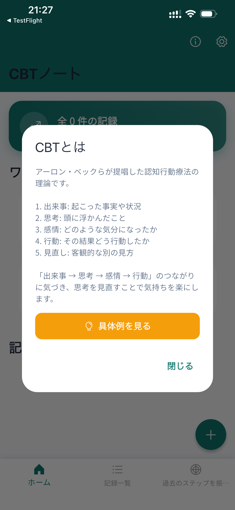
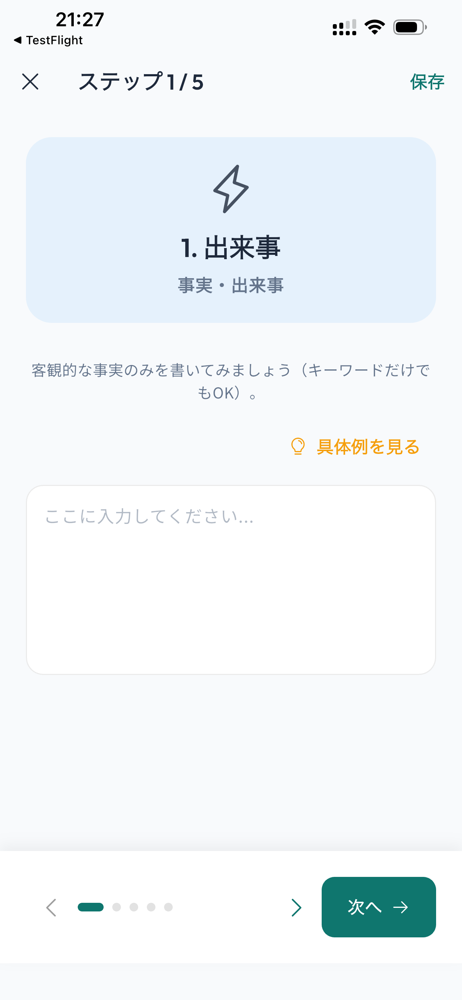

About App アプリ紹介
CBT Note is a self-care app based on Cognitive Behavioral Therapy (CBT). By organizing your thoughts into Event, Thought, Emotion, Behavior, and Alternative Thought, you can challenge negative thinking patterns and realistic perspectives.
CBTノートは、認知行動療法（CBT）に基づいたセルフケアアプリです。 「出来事」「思考」「感情」「行動」「見直し」のステップで思考を整理することで、否定的な思い込みに気づき、より現実的な視点を見つける手助けをします。
Features 機能・特徴
Understand the Theory 理論を基礎から理解
Learn the basics of CBT theory with simple explanations. Understand how your thoughts affect your emotions and behaviors, not just the events themselves.
ガイド付きでCBT理論の基礎を学べます。出来事が直接感情や行動を生むのではなく、あなたの「思考」が大きな影響を与えていることに気づきましょう。

Step-by-Step Journaling ステップ式で簡単入力
Write down your experience step by step. If you get stuck, helpful hints and examples are available for every step. The final step helps you find a realistic outlook and decide your next behavior.
1ステップずつ順番に入力するだけで思考整理が完了します。書き方に迷ったときは、豊富なヒントと具体例がサポート。

Habituate Positive Thinking 思考の習慣化をサポート
Set reminders to check in with yourself. Periodic notifications help you make objective thinking a habit.
リマインダー設定で、定期的な振り返りをサポート。感情が揺れ動いた時だけでなく、落ち着いた時間に思考を見直す習慣が身につきます。

Keywords キーワード
CBT, Cognitive Behavioral Therapy, Mental Health, Self Care, Journal, Diary, Mindfulness, Stress Management, Realistic Thinking, Behavioral Activation
認知行動療法, CBT, メンタルヘルス, セルフケア, ジャーナリング, 日記, マインドフルネス, ストレス解消, 思考整理, 認知再構成法